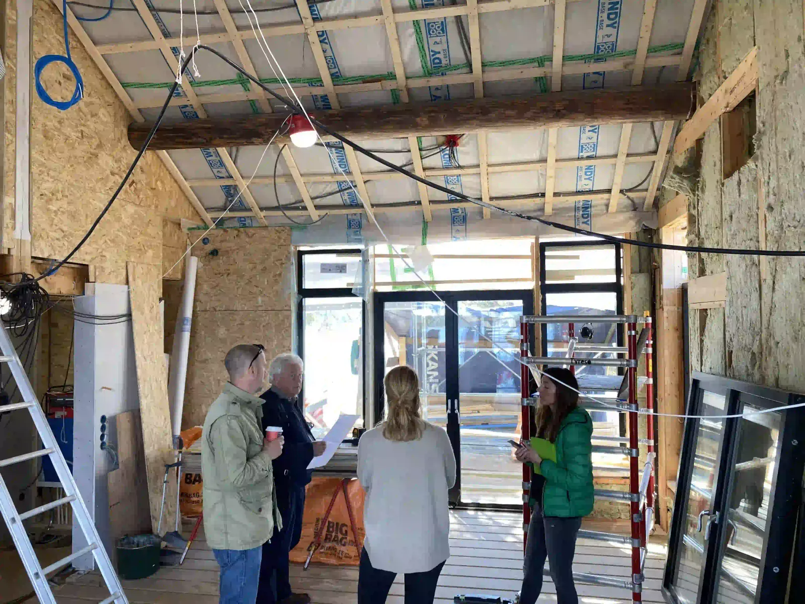

Höga krav.
Personligt engagemang.
Vi bygger för människor som bryr sig om sitt hem. Med yrkesstolthet, omsorg om detaljerna och respekt för förtroendet vi får.

Dennis Lennhammer · Vd & ägare
Samma hantverk.
Ett nytt namn.
Du har kanske känt oss som Tyresö Bygg & Partners. Nu heter vi Hammerbygg. Vi arbetar med nybyggnation, ombyggnation och varsam renovering i Stockholm och skärgården.
Dennis Lennhammer leder bolaget och är engagerad i projektens ekonomi och genomförande. Tillsammans med hantverkare, arbetsledare och noga utvalda samarbetspartners driver vi arbetet framåt.
Vi är vana vid komplexa projekt, höga förväntningar och material som kräver kunskap. Lika viktigt är ett samarbete där vi lyssnar, planerar och håller dig delaktig.
Kontakta DennisOmsorgen finns
i mer än slutresultatet.
Respekt för ditt privatliv
Diskretion är en del av vårt arbetssätt. Vi tar hänsyn till både hemmet och människorna som använder det.
Rätt människor på plats
Vi samarbetar med yrkeskunniga hantverkare, arkitekter och specialister som väljs efter uppdragets behov.
Ordning hela vägen
Ekonomi, tidsplan, egenkontroller och projektdokumentation är en naturlig del av ett väl utfört bygge.

Förtroende börjar
med insyn.
Se vad kunderna tycker och lär känna hur vi arbetar innan du bestämmer dig.
Läs omdömen på GoogleGoogle-betyg för Tyresö Bygg & Partners
Vårt tidigare namn. Kontrollerat 22 oktober 2026.Betyget är en ögonblicksbild, inte ett liveflöde.
Vad vill du
bygga vidare på?
Ett nytt hem, en varsam renovering eller en idé som behöver hitta sin form. Börja med ett samtal med Dennis.
Du är välkommen i båda fallen.